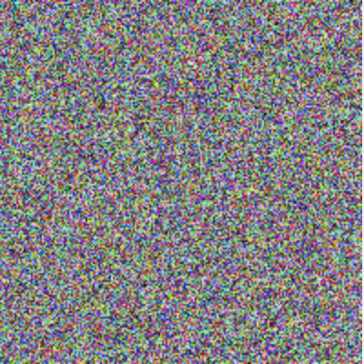

This example demonstrates creating an image from pixel data. The first step is define the width and height of the image, then create some random data of RGB values from 0 to 255.
// Define width and height of image
let width = 200
let height = 200
// Create random RGB data
var pixelValues = [UInt8](repeating: 0, count: width * height * 3)
for i in 0..<pixelValues.count {
pixelValues[i] = .random(in: 0...255)
}
Looping over the array is slow, especially for very large arrays. A better approach is to use the Accelerate framework to create the array of random RGB values.
import Accelerate
// Define width and height of image
let width = 200
let height = 200
// Create random RGB data
let n = width * height * 3
var x = [UInt32](repeating: 0, count: n)
arc4random_buf(&x, n * MemoryLayout<UInt32>.size)
let y = vDSP.integerToFloatingPoint(x, floatingPointType: Float.self)
let c = 1 / Float(UInt32.max)
let z = vDSP.multiply(c * 255, y)
let pixelValues = vDSP.floatingPointToInteger(z, integerType: UInt8.self, rounding: .towardNearestInteger)
After creating the RGB data (pixel values), the vImage.PixelBuffer from the Accelerate framework is used to create the image.
// Create the image
let buffer = vImage.PixelBuffer(
pixelValues: pixelValues,
size: .init(width: width, height: height),
pixelFormat: vImage.Interleaved8x3.self
)
let format = vImage_CGImageFormat(
bitsPerComponent: 8,
bitsPerPixel: 8 * 3,
colorSpace: CGColorSpaceCreateDeviceRGB(),
bitmapInfo: CGBitmapInfo(rawValue: CGImageAlphaInfo.none.rawValue)
)!
let image = buffer.makeCGImage(cgImageFormat: format)!

Swift Programming for macOS © 2023
Built by Gavin Wiggins